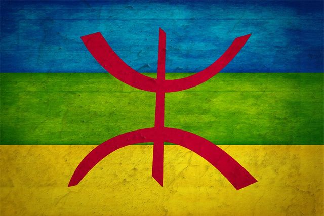

This is an example of an HTML 5 Article Area. This element represent An independant piece of content of a document, such as a blog entry, magazine or newspaper article, user comments, interactive widget, or any item of content.
AMAZIGH (BERBER) FLAG
In 1998, the World Amazigh Congress made the flag official at Tafira on Las Palmas in the Canary Islands, which were formerly inhabited by the Guanches, an ancient Berber people. The flag is composed of blue, green, and yellow horizontal bands of the same height, and a Tifinagh letter yaz or aza.

Berber flag meaning
Each color corresponds to an aspect of Tamazgha, the territory inhabited by the Berbers in North Africa:
Blue represents the sea.
Green represents the Tell and the north of Tamazgha.
Yellow represents the vastness of the desert.
The red of the letter Z (ⵣ in Tifinagh) represents the freedom of the Imazighen.
The Berber flag thus symbolizes the entire Amazigh people, living in harmony with their land, Tamazgha.